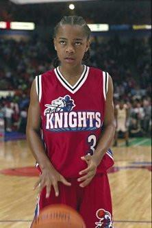

Someone Found Out The Real Original Owner Of The "MJ" Shoes From Like Mike
March 2, 2018

LOS ANGELES- The classic 2002 film Like Mike documents the tale of Calvin Cambridge joining the NBA franchise, the Los Angeles Knights at just thirteen years old. While few would argue that the magical shoes that adorned Calvin, played a large role in his success, most fans were forced to wonder on just how the shoes gained there supernatural properties. Investigative journalist Julia Mandelbaum sought to find the definitive answer to this question.
Julia states, “The most common theory among sports scientists, was that because the shoes were thought to be owned by Michael Jordan, they left some residual basketball talent in the shoes, giving whomever wore them, amazing basketball talent. However this couldn’t be further from the truth.”
It is important to note that the shoes most distinctive feature is the “MJ” insignia scribbled inside the shoes tongue. Most assumed that the “MJ” in question is Michael Jordan, but Julia and her team discovered something quite different. Mandelbaum explains, “In reality the shoes were owned by Spider-Man’s on-again, off-again girlfriend Mary-Jane Watson.”
When Julia’s team tracked down Mary-Jane Watson and asked how the shoes may have gotten their abilities, Mary-Jane replied "I'm not really sure, maybe the power was in Calvin Cambridge all along and all the shoes did was help him believe in himself, or maybe it was when a radioactive Dennis Rodman bit my shoes back in high-school, who's to say?"